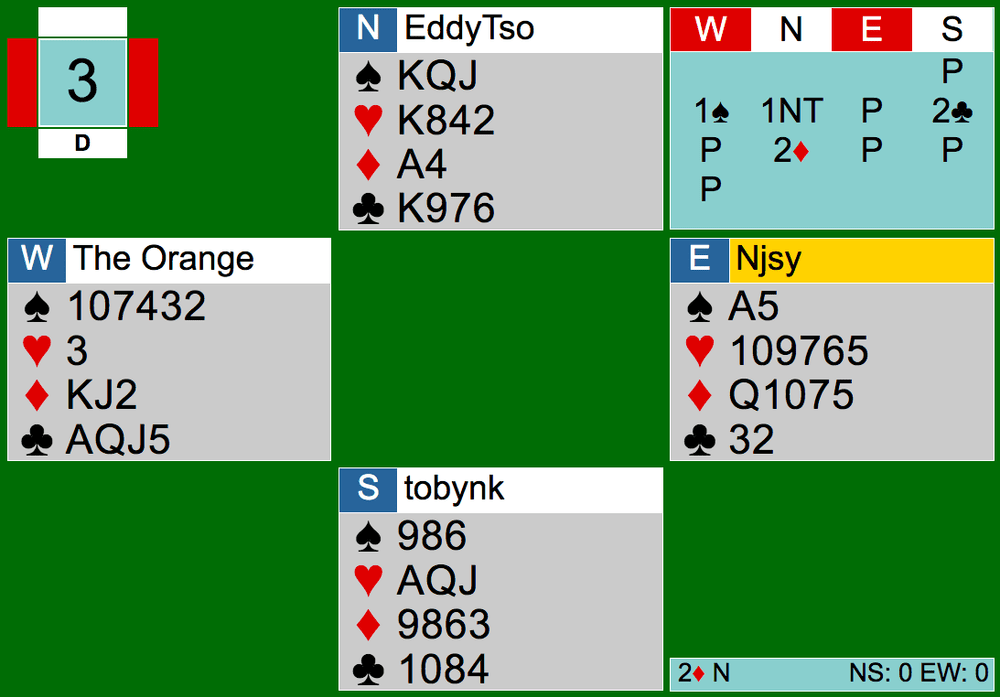
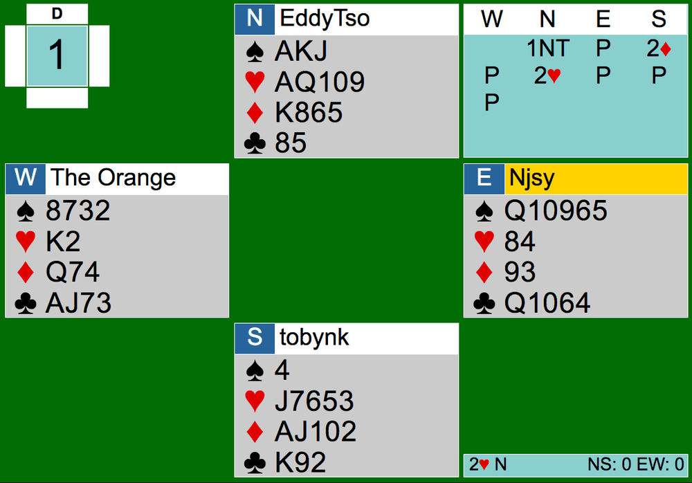

Two commonly-played conventions over a NT opening or overcall are Stayman and Jacoby transfers. They both do not need to be alerted.
Stayman
Stayman asks the NT player for 4-card majors, in hopes to play in a 4-4 major fit. After a 1NT opening or overcall, 2C is Stayman. After a 2NT opening showing 20-21 points, 3C is Stayman. The responder needs to have at least 8 points and a four card major to ask the NT bidder for their four card major.
In response to the 2C bid, the 1NT opener would bid one of the following:
2D: denying a four-card major
2H: 4 hearts
2S: 4 spades
Depending on what the opener showed, the responder can either invite to game or go to game themselves. If you have 8-9 points, you should invite to game. The NT opener should accept the invite and go to game if they have top of their range (i.e 16-17 points with 1NT opening and overcall). Bid one of the following invitational bids as a responder with 8-9 points:
2NT: telling the opener that you don’t have the major they bid/no major fit anywhere
3M (the 4-card major the opener showed): telling the opener that the major they bid was the suit you have a 4-card major in; supporting and showing a 4-4 fit
If you have 10+ points as the responder, you can bid:
3NT: no 8-card fit in the major opener showed 4 cards in
4M (the major opener showed): 4-4 fit
Let’s walk through what Stayman should look like from one of the CK Team Games.

Here, the 1NT overcall by North shows 15-18 points, balanced with a stopper in the opponent’s suit. Systems are still on. South bids 2C, which should be Stayman, asking partner if they have a four card major while S has a four card major of their own. South can’t bid Stayman here— remember you need 8+ points and a four card major. South here only has 2 3-card majors and 7 points, not enough.
Let’s pretend South does have a 4-card major and 8+ points, and North responded 2D. 2D should mean that North does not have any 4-card major. Since North has a 4-card major on this board, North should’ve bid 2H. After that, depending on South’s hand, South would either go straight to game with 10+ points or invite to game (2NT no heart fit or 3H).
Jacoby Transfers
Jacoby transfers are transfers into majors made by the responder. The responder would bid one suit lower than their intended 5-card major. The following bids are transfers, asking the 1NT opener to bid the next higher suit above their bid:
2D: asking opener to bid 2H, responder must have 5 hearts themselves, 0+ points
2H: asking opener to bid 2S, responder must have 5 spades themselves, 0+ points
After the opener transfers accordingly, the responder should bid one of the following:
Pass: less than 8 points, just want to play in a suit contract rather than NT
2NT: 8-9 points, inviting to game, asking partner if they have 3 cards in the transferred suit. We bid NT even after the transfer because responder doesn’t know whether or not opener has 3+ card support for them.
3M: 8-9 points, inviting to game, showing 6+ cards in the transferred major suit
3NT: 10+ points, only 5 cards in the transferred major
4M: 10+ points, 6+ cards in the transferred major (opener shouldn’t have any singletons, so there is a guaranteed 8-card fit).
Depending on the hand, the opener can either go to game (3NT or 4M) with top of range (16-17 points), sign off at 3M after responder’s 2NT invite showing support but not top of range, or pass.
Here’s an example from a CK game:

After the 1NT opening by North, South bids 2D, which is a transfer to hearts. South can transfer here because S has a five card major, hearts. North correctly bids hearts for South, completing the transfer. Now after the transfer, South should bid 2NT, inviting North to game (8-9 points) either in hearts (if N has 3+ hearts) or NT.
Since North has 4 strong heart support and top of the 15-17 range, after South’s 2NT, North should jump straight to 4H.